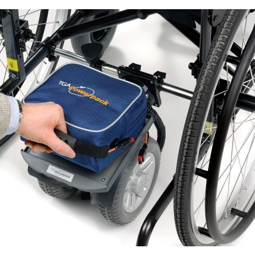
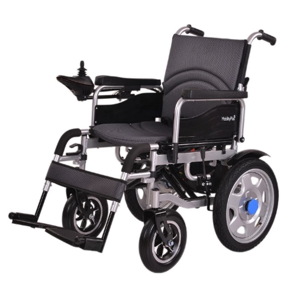

En nuestro Need Statement se requería un sistema que pueda movilizar al paciente con TVM con una alternativa al uso de los brazos. Esto se puede dividir principalmente en dos funciones: ¿cómo controlaría el paciente la silla? y ¿cómo haría la silla para realizar los movimientos?
Estado del arte
Control


Haga click en la imagen para visualizar las descripciones
Movimiento


Wheelchair Powerpack
Electric Wheelchair